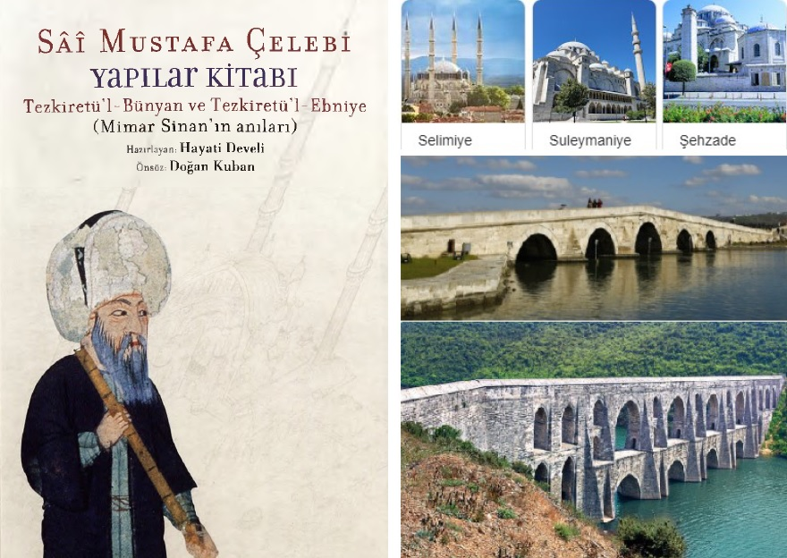

Tezkiretul-Bunyân, Mimar Sinan’ın hayatını anlatan ilginç bir kitap. Edebiyat ile mühendisliğin benzersiz bir karışımı olan bu eser 1586’da Sâî Mustafa Çelebi isimli az bilinen bir söz ustası tarafından yazılmış. 32 dakikalık bu sunumda Sinan’ın gayret ve dua ile başarı kazanan insani yönü vurgulanıyor.
M Akif Eyler PDF sunum Su kemerleri
